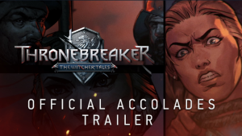

今年是《巫师》系列诞生的第11年，为了回馈中国玩家对我们的长期支持，我们为《巫师3：狂猎》添加了官方简体中文支持，所有购买过《巫师3：狂猎》的玩家均可免费获取更新。 亲，这是你补票大作，充实收藏，安利亲朋的最佳时机！
To every Thronebreaker purchase on Steam we’re adding a free copy of The Witcher: Enhanced Edition Director’s Cut, as well as official Thronebreaker soundtrack, concept art, and more!
Make sure to visit www.witchertales.com to find additional information about the setting, characters, and gameplay!

All the Strategy at Your Fingertips: Completely optimized for a second-screen experience. Enjoy all the content from our print strategy guide in a convenient, easy-to-use digital companion.
Searchable and Sortable: All content in this eGuide is easily and quickly accessible.
Over 800 pages: This guide includes a 100% complete walkthrough for all the quests in the game, including all DLC!
Fixes issue whereby oil descriptions were not removed from swords.
Fixes issue whereby it was not possible to obtain certain dye recipes.
Fixes issue whereby it was possible to skip the entire second phase of the Eredin fight.
Fixes issue whereby a silver sword was needed to craft the Mastercrafted Legendary Griffin Steel Sword.
Fixes issue whereby two NPCs from the "Without a Trace" quest were impossible to defeat.